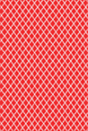

<!DOCTYPE html>
<html>
<head>
    <title>蜘蛛纸牌游戏</title>
    <meta charset="utf-8"/>
    <meta content="IE=edge,chrome=1" http-equiv="X-UA-Compatible"/>
    <meta name="viewport" content="width=device-width, initial-scale=1.0"/>
    <link rel="stylesheet" href="css/public.css">

    <script src="js/jquery.min.js"></script>
    <style>
        .gameView {
            position: absolute;
            top: 0;
            left: 0;
            width: 90%;
            height: 100%;
        }

        * {
            -webkit-touch-callout: none; /*系统默认菜单被禁用*/
            -webkit-user-select: none; /*webkit浏览器*/
            -khtml-user-select: none; /*早起浏览器*/
            -moz-user-select: none; /*火狐浏览器*/
            -ms-user-select: none; /*IE浏览器*/
            user-select: none; /*用户是否能够选中文本*/
        }
    </style>
</head>


<body>

<div class="gameView" id="gameView">
    <div class="gameBg"></div>
    <div class="pokerBox" id="pokerBox"></div>
</div>

<script type="text/javascript">

    const width = document.documentElement.clientWidth; //获取当前手机屏宽
    const height = document.documentElement.clientHeight; //手机褡高
    if (width < height) { //如果宽小于高，就是代表竖屏
        const contentDOM = document.getElementById('gameView'); //获取lingan_1元素
        contentDOM.style.width = height + 'px';  //设置该元素的宽等于屏高
        contentDOM.style.height = width + 'px'; //设置该元素的高等于屏宽
        contentDOM.style.top = (height - width) / 2 + 'px';
        contentDOM.style.left = 0 - (height - width) / 2 + 'px';
        contentDOM.style.transform = 'rotate(90deg)'; //让该元素旋转90度，使其横屏展示
    }
    //根据手机旋转的角度来判断
    const evt = "onorientationchange" in window ? "orientationchange" : "resize"; //旋转事件
    window.addEventListener(evt, function () { //事件监听
        if (window.orientation === 90 || window.orientation === -90) { //旋转到 90 或 -90 度，即竖屏到横屏
            screen_width = height; //横屏，灵感的宽度就等于屏高
            contentDOM.style.width = height + 'px';
            contentDOM.style.height = width + 'px';
            contentDOM.style.top = '0px';
            contentDOM.style.left = '0px';
            contentDOM.style.transform = 'none'; //不旋转；
        } else { //旋转到 180 或 0 度，即横屏到竖屏
            screen_width = height; //竖屏，灵感的宽度就等于屏高
            contentDOM.style.width = height + 'px';
            contentDOM.style.height = width + 'px';
            contentDOM.style.top = (height - width) / 2 + 'px';
            contentDOM.style.left = 0 - (height - width) / 2 + 'px';
            contentDOM.style.transform = 'rotate(90deg)'; //旋转90度
        }
    }, false);
    document.getElementById('gameView').addEventListener('contextmenu', contextmenu);

    function contextmenu(ev) {//右键标注雷块
        //禁用右键的浏览器默认菜单:阻止默认动作
        ev.preventDefault();

    }

    function isPC() {
        var userAgentInfo = navigator.userAgent;
        var Agents = new Array("Android", "iPhone", "SymbianOS", "Windows Phone", "iPad", "iPod");
        var flag = true;
        for (var v = 0; v < Agents.length; v++) {
            if (userAgentInfo.indexOf(Agents[v]) > 0) {
                flag = false;
                break;
            }
        }
        return flag;
    }

    /**
     * 开始游戏
     */
    function initGame() {
        initRandomPoker(); // 生成随机扑克牌数组
        initPokerCard(); // 生成扑克牌初始化牌堆
        initFirstSendPoker(); // 触发首次发牌动画
    }

    initView(); // 初始化页面布局
    chooseGameDifficulty(); // 选择游戏难度

    /**
     * 初始化页面布局
     */
    function initView() {
        var html = html2 = '';
        for (var i = 1; i <= 10; i++) {
            html += '<div class="pokerBr" style="left: ' + (50 * i - 40) + 'px" group="' + i + '"></div>';
            html2 += '<div class="pokerLine" style="left: ' + (50 * i - 40) + 'px" group="' + i + '"></div>';
        }
        var html3 = '<div class="pokerDeposit"></div>'; // 牌堆
        var html4 = '<div class="pokerMoveGroup"></div>'; // 移动牌组
        var html5 = '<div class="pokerDoneGroup"></div>'; // 完成牌组
        $('#pokerBox').html(html + html2 + html3 + html4 + html5);
    }

    /**
     * 生成随机扑克牌数组
     */
    var pokerData = {
        type: ['a', 'b', 'c', 'd'], // [a 方片] [b 梅花] [c 黑桃] [d 红桃]
        num: [1, 2, 3, 4, 5, 6, 7, 8, 9, 10, 11, 12, 13],
    };
    var pokerAllCount = 0;
    var pokerAllPet = [];
    var pokerSendNum = 0;
    var pokerDifficult = 1; // 扑克难度 ：[1 简单（单色）] [2 中等（双色）] [3 困难（四色）]

    function initRandomPoker() {

        pokerAllCount = 0;
        pokerAllPet = [];
        pokerSendNum = 0;
        for (var i = 1; i <= pokerData.type.length; i++) {
            for (var t = 1; t <= pokerData.num.length; t++) {
                var d = pokerData.type[i - 1] + '-' + pokerData.num[t - 1];
                pokerAllPet.push(d, d);     //将a-1 方片1 a-2 方片2 …… b-1 梅花1 b-2 梅花2 …… 放入数组中
            }
        }
        // console.log(pokerAllPet);
        pokerAllCount = pokerAllPet.length;   //扑克牌总数
        pokerAllPet = shuffle(pokerAllPet);   //将数组打乱
    }

    /**
     * 数组乱序
     */
    function shuffle(arr) {
        var len = arr.length;
        for (var i = 0; i < len - 1; i++) {
            var idx = Math.floor(Math.random() * (len - i));
            var temp = arr[idx];
            arr[idx] = arr[len - i - 1];
            arr[len - i - 1] = temp;
        }
        return arr;
    }

    $('#pokerBox').on('mousedown', 'img', function (event) {
        event.preventDefault();   //取消事件的默认动作
    })

    var pickLeft = pickTop = 0;
    var pickObj = null;

    /**
     * 鼠标点击扑克触发
     */
    if (isPC()) {
        $('body').on('mousedown', '#pokerBox .pokerLine .pokerLi', function (event) {
            var check = checkCanPickPoker(this);  //检测是否可以拖动
            if (check.state) {   //可以拖动
                var e = event || window.event;
                pickLeft = e.offsetX;
                pickTop = e.offsetY;
                pickObj = $(this);

                var groupTop = Number($(this).attr('groupTop'));
                var html = '';
                $(this).closest('.pokerLine').find('.pokerLi').each(function () {
                    if ($(this).attr('groupTop') >= groupTop) {
                        html += $(this).prop('outerHTML');
                        $(this).attr('state', 'move');  //把状态设置为move，一会移动完成后将把所有move的牌去除
                    }
                });

                var itLeft = e.clientX - pickLeft;
                var itTop = e.clientY - pickTop;
                $('#pokerBox .pokerMoveGroup').show().css({
                    top: itTop,
                    left: itLeft,
                }).html(html);
            } else {
                gAlert({
                    txt: '该牌不允许被拖动',
                });
            }
        }).on('mousemove', function (event) {   //拖动过程，不停改变top和left的值
            if (pickObj) {
                var e = event || window.event;
                var itLeft = e.clientX - pickLeft;
                var itTop = e.clientY - pickTop;
                $('#pokerBox .pokerMoveGroup').css({
                    top: itTop,
                    left: itLeft,
                })
            }
        }).on('mouseup', function (event) {
            if (pickObj) {
                var endLeft = Number($('#pokerBox .pokerMoveGroup').css('left').replace('px', '')) + 20;
                var leftKb = $('#gameView')[0].offsetLeft;
                var range = 0;
                if (endLeft <= leftKb + 50 + 5) { // 处于第一列
                    range = 1;
                } else if (endLeft >= leftKb + 50 * 9 + 5) { // 处于最后一列
                    range = 10;
                } else {
                    range = Math.ceil((endLeft - leftKb) / 50);
                }

                var moveCard = pickObj;  //原牌组的第一张扑克
                var endCard = $('#pokerBox .pokerLine[group="' + range + '"] .pokerLi:last');  //新牌组的最后一张扑克

                if (endCard.length > 0) {   //若新牌组有扑克，判断数字是否可以衔接
                    var moveCardSplit = moveCard.attr('card').split('-');
                    var endCardSplit = endCard.attr('card').split('-');
                    if (moveCardSplit[1] == endCardSplit[1] - 1) { //判断原牌组第一张扑克上的数字是否为新牌组最后一张扑克数字+1
                        $('#pokerBox .pokerLine[group="' + range + '"]').append($('#pokerBox .pokerMoveGroup').html());
                        $('#pokerBox .pokerLine[group="' + range + '"] .pokerLi').attr({  //重新设置该牌组的top和left
                            grouptop: function () {
                                return $(this).index() + 1
                            },
                            groupleft: range,
                        })
                        $('#pokerBox .pokerLine .pokerLi[state="move"]').remove();  //将原牌组被移动的牌去除
                    }
                } else {  //新牌组没有扑克，直接衔接
                    $('#pokerBox .pokerLine[group="' + range + '"]').append($('#pokerBox .pokerMoveGroup').html());
                    $('#pokerBox .pokerLine[group="' + range + '"] .pokerLi').attr({
                        grouptop: 1,
                        groupleft: range,
                    })
                    $('#pokerBox .pokerLine .pokerLi[state="move"]').remove();
                }

                $('#pokerBox .pokerLine .pokerLi[state="move"]').removeAttr('state');

                $('#pokerBox .pokerMoveGroup').hide().css({   //将移动数组清空并隐藏
                    top: 0,
                    left: 0,
                }).empty();
                pickLeft = pickTop = 0;
                pickObj = null;
            }

            checkNoOpenPoker(); // 检测所有的牌，查看是否存在 该翻开但还没有翻开的扑克
            checkDonePoker(); // 检测所有的牌，查看是否存在 可以直接收取的正确序列卡牌
        })
    } else {
        $('body').on('touchstart', '#pokerBox .pokerLine .pokerLi', function (event) {
            let width = document.documentElement.clientWidth;
            let height = document.documentElement.clientHeight;
            if (width > height) {
                let w = width;
                width = height;
                height = width;
            }
            var e = event || window.event;
            let x = e.originalEvent.targetTouches[0].pageY;
            let y = width - e.originalEvent.targetTouches[0].pageX;
            if (pickObj) {
                var endLeft = x - 45;
                var leftKb = 0;
                var range = 0;
                if (endLeft <= leftKb + 50 + 5) { // 处于第一列
                    range = 1;
                } else if (endLeft >= leftKb + 50 * 9 + 5) { // 处于最后一列
                    range = 10;
                } else {
                    range = Math.ceil((endLeft - leftKb) / 50);
                }

                var moveCard = pickObj;  //原牌组的第一张扑克
                var endCard = $('#pokerBox .pokerLine[group="' + range + '"] .pokerLi:last');  //新牌组的最后一张扑克

                if (endCard.length > 0) {   //若新牌组有扑克，判断数字是否可以衔接
                    var moveCardSplit = moveCard.attr('card').split('-');
                    var endCardSplit = endCard.attr('card').split('-');
                    if (moveCardSplit[1] == endCardSplit[1] - 1) { //判断原牌组第一张扑克上的数字是否为新牌组最后一张扑克数字+1
                        $('#pokerBox .pokerLine[group="' + range + '"]').append($('#pokerBox .pokerMoveGroup').html());
                        $('#pokerBox .pokerLine[group="' + range + '"] .pokerLi').attr({  //重新设置该牌组的top和left
                            grouptop: function () {
                                return $(this).index() + 1
                            },
                            groupleft: range,
                        })
                        $('#pokerBox .pokerLine .pokerLi[state="move"]').remove();  //将原牌组被移动的牌去除
                    }
                } else {  //新牌组没有扑克，直接衔接
                    $('#pokerBox .pokerLine[group="' + range + '"]').append($('#pokerBox .pokerMoveGroup').html());
                    $('#pokerBox .pokerLine[group="' + range + '"] .pokerLi').attr({
                        grouptop: 1,
                        groupleft: range,
                    })
                    $('#pokerBox .pokerLine .pokerLi[state="move"]').remove();
                }

                $('#pokerBox .pokerLine .pokerLi[state="move"]').removeAttr('state');

                $('#pokerBox .pokerMoveGroup').hide().css({   //将移动数组清空并隐藏
                    top: 0,
                    left: 0,
                }).empty();
                pickLeft = pickTop = 0;
                pickObj = null;
            } else {
                var check = checkCanPickPoker(this);  //检测是否可以拖动
                if (check.state) {   //可以拖动
                    pickObj = $(this);
                    var groupTop = Number($(this).attr('groupTop'));
                    var html = '';
                    $(this).closest('.pokerLine').find('.pokerLi').each(function () {
                        if ($(this).attr('groupTop') >= groupTop) {
                            html += $(this).prop('outerHTML');
                            $(this).attr('state', 'move');  //把状态设置为move，一会移动完成后将把所有move的牌去除
                        }
                    });

                    var endLeft = x - 45;
                    var range = 0;
                    if (endLeft <= 50 + 5) { // 处于第一列
                        range = 1;
                    } else if (endLeft >= 50 * 9 + 5) { // 处于最后一列
                        range = 10;
                    } else {
                        range = Math.ceil(endLeft / 50);
                    }

                    var itLeft = range * 50 - 35;
                    var itTop = groupTop * 15 + 10;
                    $('#pokerBox .pokerMoveGroup').show().css({
                        top: itTop,
                        left: itLeft,
                    }).html(html);
                } else {
                    gAlert({
                        txt: '该牌不允许被拖动',
                    });
                }
            }

        }).on('touchend', function (event) {
            checkNoOpenPoker(); // 检测所有的牌，查看是否存在 该翻开但还没有翻开的扑克
            checkDonePoker(); // 检测所有的牌，查看是否存在 可以直接收取的正确序列卡牌
        })
    }


    $('#pokerBox').on('click', '.pokerDeposit', function () {
        keepSendPoker();   //继续发牌
    })

    /**
     * 生成初始化牌堆
     */
    function initPokerCard() {
        var html = '';
        for (var i = 1; i <= pokerAllCount; i++) {
            var sort = pokerAllCount - i + 1;
            var card = pokerAllPet[sort - 1];

            //生成每一张扑克，分别有sort序号和card牌号，img为该扑克的花色图片，但初始化被f-1.png（未打开的扑克）遮挡住了
            html += '<div class="pokerLi" isOpen="no" sort="' + sort + '" card="' + card + '" style="left: ' + (i * 2 - 1) + 'px;">' +
                '<div class="img">' +
                '' +
                '' +
                '</div>' +
                '</div>';
        }
        $('#pokerBox .pokerDeposit').append(html);  //将生成的扑克放入牌堆中
    }

    /**
     * 首次发牌动画
     */
    function initFirstSendPoker() {
        var pokerLineView = 54; // [ 6, 6, 6, 6, 5, 5, 5, 5, 5, 5 ]
        var pokerLineStart = 1;
        var pokerLineInset = null;
        setTimeout(function () {
            pokerLineInset = setInterval(function () {   //用setInterval不停的调用function，模拟动画效果
                var s = pokerLineStart;
                if (s <= 54) { // 执行首次发牌，首次发54张牌
                    var groupTop = Math.ceil(s / 10);
                    var top = (groupTop - 1) * 30;   //牌距最上边的距离
                    var groupLeft = (s - 1) % 10 + 1;   // %10 循环发牌
                    var left = (groupLeft - 1) * 50;  //牌距最左边的距离
                    animateSendPoker(s, {
                        param: {
                            top: -612 + top,
                            left: left,
                            // 'z-index': s,
                        },
                        group: {
                            groupTop: groupTop,
                            groupLeft: groupLeft,
                        },
                    });
                    pokerLineStart++;
                    pokerSendNum++;
                } else {
                    clearInterval(pokerLineInset);   //停止发牌
                    setTimeout(function () {
                        for (var i = pokerLineView - 9; i <= pokerLineView; i++) { // 执行首次翻牌（最后10张）
                            animateOpenPoker(i);  //将序号为i的牌翻过来
                        }
                    }, 300)  //0.3秒后将最底下的牌翻过来
                }
            }, 100)  //每0.1秒调用一次function
        }, 800)  //0.8后开始发牌
    }

    /**
     * 继续发牌
     */
    function keepSendPoker() {
        var canSend = true;
        $('#pokerBox .pokerLine').each(function () {  //检测如果有空余的列，则不予发牌
            if ($(this).find('.pokerLi').length == 0) {
                canSend = false;
            }
        })
        if (canSend) {
            var lastAllNum = pokerSendNum;
            var pokerLineStart = lastAllNum + 1;
            var pokerLineInset = null;
            pokerLineInset = setInterval(function () {
                var s = pokerLineStart;
                if (s <= lastAllNum + 10) { // 每轮发牌10张
                    var groupLeft = s - lastAllNum;
                    var left = (groupLeft - 1) * 50;
                    var groupTop = $('#pokerBox .pokerLine[group="' + groupLeft + '"] .pokerLi').length + 1;
                    var top = (groupTop - 1) * 30;
                    animateSendPoker(s, {
                        param: {
                            top: -612 + top,
                            left: left,
                            // 'z-index': s,
                        },
                        group: {
                            groupTop: groupTop,
                            groupLeft: groupLeft,
                        },
                    }, function () {
                        animateOpenPoker(s);
                    });
                    pokerLineStart++;
                    pokerSendNum++;
                } else {
                    clearInterval(pokerLineInset);
                }
            }, 100)
        } else {
            gAlert({
                txt: '不允许在有空列的时候发牌',
            })
        }
    }

    /**
     * 执行发牌动画 [s 序号] [j 参数] [c 回调函数]
     */
    function animateSendPoker(s, j, c) {
        var obj = $('#pokerBox .pokerDeposit .pokerLi[sort="' + s + '"]');
        obj.attr(j.group).animate(j.param, 150, function () {
            $('#pokerBox .pokerLine[group="' + j.group.groupLeft + '"]').append(obj.addClass('importantClass').prop('outerHTML'));
            obj.remove();   //从牌堆中删除该扑克
            if (c) {
                c();
            }   //执行回调函数
        });
    }

    /**
     * 执行翻牌动画 [s 序号] [j 参数] [c 回调函数]
     */
    function animateOpenPoker(s, j, c) {
        $('#pokerBox .pokerLine .pokerLi[sort="' + s + '"]').attr('isOpen', 'yes');
    }

    /**
     * 检测是否可以拖动
     */
    function checkCanPickPoker(obj) {
        var result = {
            state: false, // 是否可以拖动 [true 可以] [false 不可以]
            dropGroupTop: 0, // 拖动的卡牌序号
        }
        if ($(obj).attr('isOpen') == 'yes') {  //是否是打开的扑克
            var groupTop = Number($(obj).attr('groupTop'));
            var groupCardArr = [];
            $(obj).closest('.pokerLine').find('.pokerLi').each(function () {
                if ($(this).attr('groupTop') >= groupTop) {   //将obj牌以下的所有牌都存入数组groupCardArr中
                    var c = $(this).attr('card').split('-');   //将牌号用-隔开，比如a-1，b-2
                    groupCardArr.push({
                        a: c[0],    //花色
                        b: Number(c[1]),    //数字
                        g: $(this).attr('groupTop'),
                    });
                }
            })

            result.state = true;
            result.dropGroupTop = groupCardArr[0].g;

            if (groupCardArr.length > 1) {    //如果有两张牌以上，比较每一张的花色和数字
                for (var i = 0; i <= groupCardArr.length - 2; i++) {
                    var nowCard = groupCardArr[i];
                    var nextCard = groupCardArr[i + 1];
                    //若全部花色都相同并且当前数字比上一张大1，则可以全部拖动，否则，不予拖动
                    if (!(nowCard.a == nextCard.a && nowCard.b == nextCard.b + 1)) {
                        result.state = false;
                        result.dropGroupTop = 0;
                    }
                }
            }
        }
        return result;
    }

    /**
     * 检测并翻开没有翻开的扑克
     */
    function checkNoOpenPoker() {
        if (pokerSendNum < 54) {
            return false;
        }
        $('#pokerBox .pokerLine').each(function () {
            if ($(this).find('.pokerLi:last').attr('isOpen') == 'no') {
                $(this).find('.pokerLi:last').attr('isOpen', 'yes');
            }
        })
    }

    /**
     * 检测是否可以直接收取正确排序的卡牌
     */
    function checkDonePoker() {
        if (pokerSendNum < 54) {
            return false;
        }
        //从K开始遍历以下的每一张牌
        $('#pokerBox .pokerLine .pokerLi[isopen="yes"][card$="-13"]').each(function () {
            var checkBit = $(this).attr('card').split('-')[0];   //花色
            var checkTop = Number($(this).attr('groupTop'));   //所属牌组
            var pobj = $(this).closest('.pokerLine');
            var isDone = true;
            var pushCard = [$(this).attr('sort')];
            for (var i = 1; i <= 12; i++) {
                var s = pobj.find('.pokerLi[isopen="yes"][groupTop="' + (checkTop + i) + '"]');  //下一张牌
                pushCard.push(s.attr('sort'));  //将序号存入数组
                //如果该牌的花色不等于K的花色并且数字也不等于K的数字-i，则不能收牌
                if (pobj.find('.pokerLi[isopen="yes"][groupTop="' + (checkTop + i) + '"]').attr('card') != checkBit + '-' + (13 - i)) {
                    isDone = false;
                    break;
                }
            }
            if (isDone) {  //如果可以收牌
                pushCard.reverse();  //将数组反转，原本K Q J 10 9 …… 变为 1 2 3 4 …… 因为要从最下面的1开始收牌
                moveDonePoker(pushCard);  //收牌
            }
        })
    }

    /**
     * 收起正确排序的卡牌
     */
    function moveDonePoker(arr) {
        var endTop = $('#pokerBox .pokerDoneGroup').offset().top;
        var endLeft = $('#pokerBox .pokerDoneGroup').offset().left;
        var html = '';
        $.each(arr, function (a, b) {  // a是下标 b是内容
            var s = $('#pokerBox .pokerLine .pokerLi[sort="' + b + '"]');  //将序号为b的牌取出
            var top = s.offset().top;
            var left = s.offset().left;
            s.removeClass('importantClass').css({   //将该牌在牌组中去掉
                'position': 'fixed',
                'left': left,
                'top': top,
            });
            html += s.prop('outerHTML');
            s.animate({top: endTop, left: endLeft}, 250, function () {  //以动画方式移动该牌进牌堆
                s.remove();
                if (a == arr.length - 1) {   //最后一张
                    $('#pokerBox .pokerDoneGroup').append(html);   //在右下角的牌堆中显示
                }
            });
        });
    }

    /**
     * 弹框
     */
    function gAlert(json) {
        var json = $.extend({
            txt: '',
            txtCenter: false,
            btn: '',
            btnCall: null,
            btn2: '',
            btn2Call: null,
            btn3: '',
            btn3Call: null,
        }, json)
        // console.log(json);

        var hasBtn = hasBtn2 = hasBtn3 = false;
        if (json.btn && json.btn != '') {
            hasBtn = true;
        }
        if (json.btn2 && json.btn2 != '') {
            hasBtn2 = true;
        }
        if (json.btn3 && json.btn3 != '') {
            hasBtn3 = true;
        }

        var html = '<div class="gAlert" state="now">' +
            '<div class="txt" style="' + (json.txtCenter ? 'text-align:center;' : '') + '">' + json.txt + '</div>' +
            (hasBtn || hasBtn2 || hasBtn3 ?
                '<div class="tool disFlex heiAuto widAuto">' +
                (hasBtn ? '<div class="btn btn1">' + json.btn + '</div>' : '') +
                (hasBtn2 ? '<div class="btn btn2">' + json.btn2 + '</div>' : '') +
                (hasBtn3 ? '<div class="btn btn3">' + json.btn3 + '</div>' : '') +
                '</div>'
                : '') +
            '</div>';
        $('.gAlert:not(.out)').addClass('out').attr('state', 'out');
        $('#gameView').append(html);
        var sobj = $('.gAlert[state="now"]');
        sobj.find('.btn').click(function () {
            sobj.addClass('out').attr('state', 'out');
            if ($(this).hasClass('btn1') && json.btnCall) {
                json.btnCall();
            } else if ($(this).hasClass('btn2') && json.btn2Call) {
                json.btn2Call();
            } else if ($(this).hasClass('btn3') && json.btn3Call) {
                json.btn3Call();
            }
        })

        if (!hasBtn && !hasBtn2 && !hasBtn3) {
            sobj.css('width', 'auto');
            var width = sobj.outerWidth();
            sobj.css({'margin-left': -width / 2});
            setTimeout(function () {
                sobj.addClass('out').attr('state', 'out');
            }, 2000)
        }

        setTimeout(function () {
            sobj.css('top', 30);
        }, 200)
    }

    /**
     * 选择游戏难度
     */
    function chooseGameDifficulty() {
        gAlert({
            txt: '请选择游戏难度',
            txtCenter: true,
            btn: '简单（单色）',
            btnCall: function () {
                pokerDifficult = 1;
                pokerData.type = ['c', 'c', 'c', 'c'];
                initGame();
            },
            btn2: '中等（双色）',
            btn2Call: function () {
                pokerDifficult = 2;
                pokerData.type = ['c', 'd', 'c', 'd'];
                initGame();
            },
            btn3: '困难（四色）',
            btn3Call: function () {
                pokerDifficult = 3;
                pokerData.type = ['a', 'b', 'c', 'd'];
                initGame();
            },
        });
    }

</script>

</body>
</html>